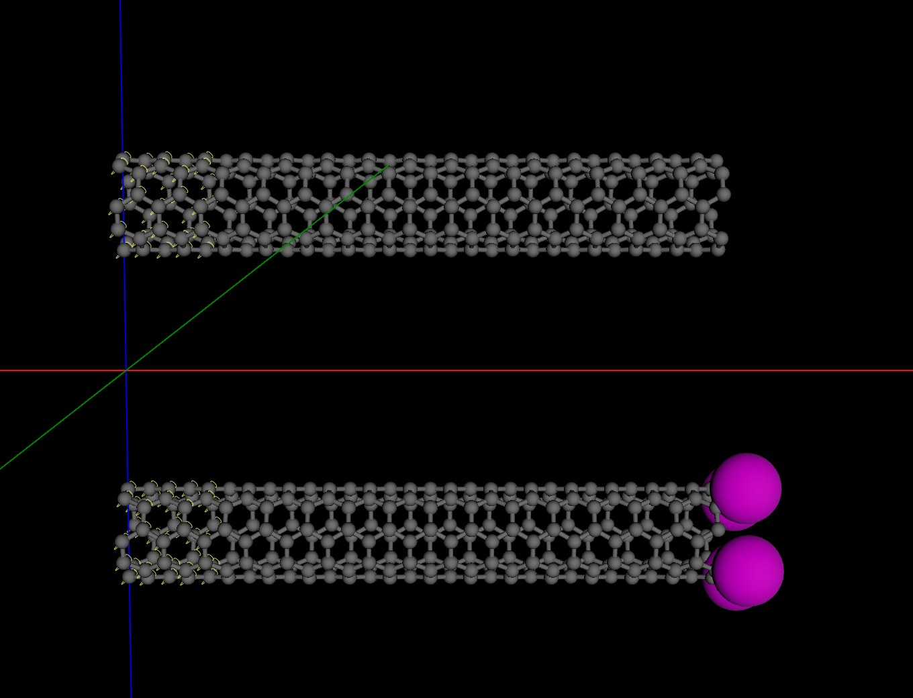
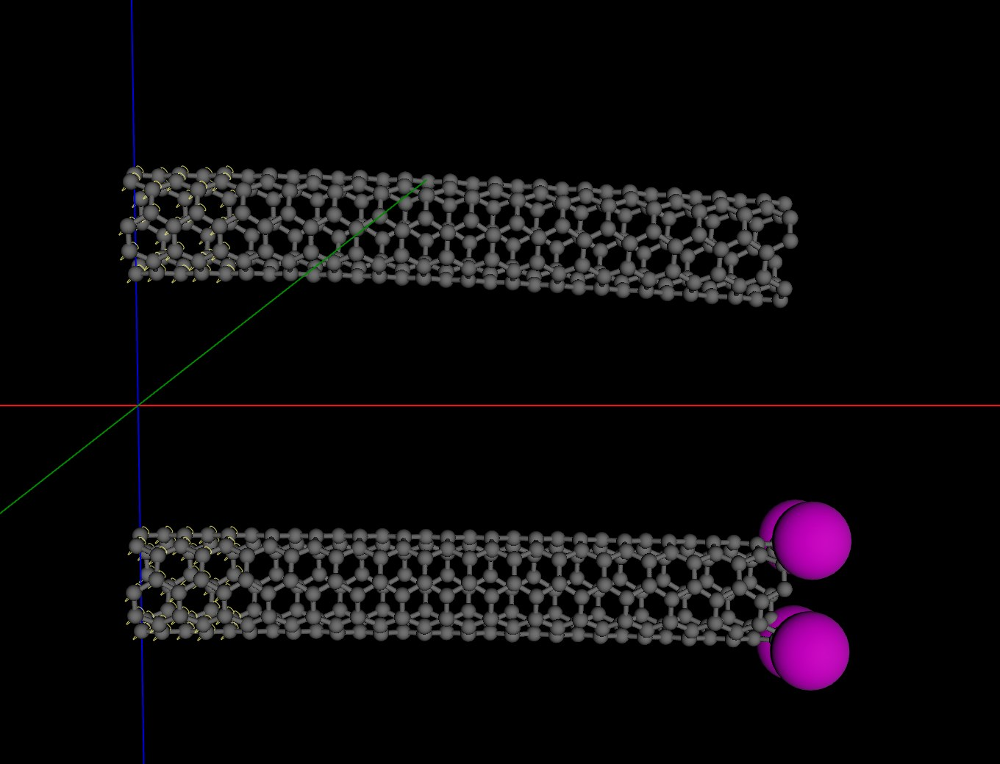
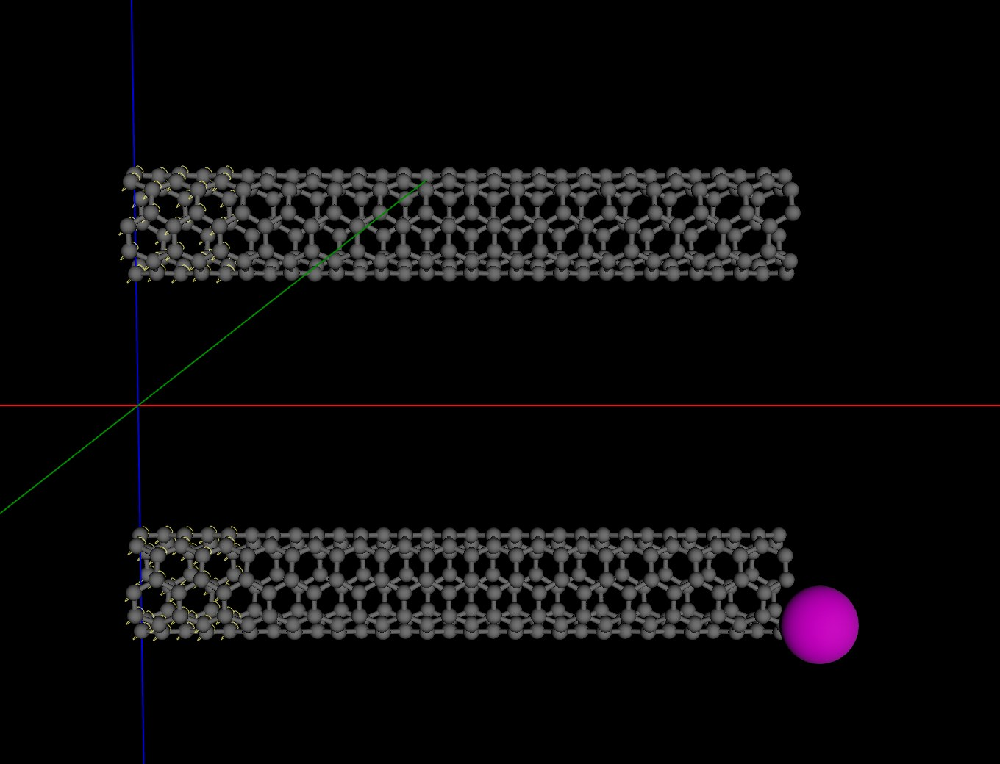

Nanotube Mass Sensors: Weighing Atoms by the Pitch of a Vibration
AIMS sets a carbon nanotube vibrating like a diving board, and an AI agent weighs the atoms on its tip by how much they lower its frequency.
A diving board vibrates more slowly with a swimmer standing on its end. The same is true of any beam that is held at one end: weight added to the free end lowers the frequency of its vibration, and the drop tells how much weight was added. A carbon nanotube is among the stiffest and lightest beams that can be made, so a few atoms on its tip are enough to change its pitch. AIMS models every atom of such a tube, and an AI agent sets up the experiments. A student asks a plain-language question, and the agent builds the tubes, runs them, measures the vibration, and posts the measured data in the chat. The window below holds two nanotubes, each held at its left end. The lower one carries four iodine atoms on its tip. Press Play and watch the two tips.
A bare nanotube (above) and a nanotube with four iodine atoms on its tip (below, purple). Both are held at the left end and get the same push. The loaded tube swings more slowly.
Weighing by Pitch
A beam that is held at one end swings at a frequency set by two things: how stiff the beam is, and how much mass has to move. The stiffness pulls the tip back, and the mass resists being moved. Added mass leaves the stiffness as it was and gives the beam more to move, so each swing takes longer. A balance of this kind measures time and reports mass. Nothing is weighed directly.
The method is in everyday use. A quartz crystal microbalance is a vibrating disk of quartz whose frequency falls as material lands on it, and it measures the thickness of thin films in factories and laboratories. The lighter the vibrating part, the smaller the mass that it can detect. In 1999 Poncharal and coworkers set single nanotubes vibrating inside an electron microscope with an electrical voltage, measured their frequencies, and proposed the vibrating nanotube as a balance for very small masses. In 2008 Jensen, Kim, and Zettl held one end of a nanotube 205 nm long, set it vibrating, and let gold atoms land on it. They read the mass of the gold from the fall in frequency, at room temperature, with a resolution close to the mass of one gold atom.
The Model
Each tube in the lab is a (4,4) nanotube of 240 carbon atoms, 36 Å long and 5.4 Å across. The two numbers in the name of a nanotube describe how the sheet of carbon atoms is rolled, and a larger pair of numbers means a wider nanotube. The 40 atoms of the first two periods at the left end of each tube are fixed, which is the clamp, and the lab marks them with pins. That leaves 30 Å of each tube free. The two tubes are 20 Å apart, far enough that neither affects the other.
The upper tube is bare. The lower tube carries four iodine atoms, each joined by a chemical bond to a carbon atom on the rim of the free end. An iodine atom weighs 127 atomic mass units, about ten times a carbon atom. The lab draws the iodine atoms as large purple spheres so that they stand out. Every free atom starts with an upward speed that grows toward the free end, up to 200 m/s at the tip, and no other motion. Both tubes get the same push. The thermostat of the lab is off, so the total energy stays constant.
Running Experiments by Asking
AIMS is an AI-native environment. Building the tubes, bonding atoms to a tip, timing the swings, and tabulating the results are the agent's work. A student asks the agent "how the frequency depends on the load", and the agent recognizes the intent, builds a tube for each load, runs each one, and posts the frequencies in the conversation.
Go to AIMS and open the list of examples, with the lightbulb button on the toolbar or the Examples item in the main menu (☰). Open A Nanotube Mass Sensor from the list (Nanotechnology, Molecular Machines), open the chat, and type the prompts below. The answer to the second prompt in the example keeps a lab for every load: press "Load this state" on a card and the lab holds the bare tube above a tube with one, two, three, or four iodine atoms, at the moment of the push.
- Two tubes — “Run it for 40 ps and chart the height of each tip.”
- Weighing — “How does the frequency depend on the load? Try one to 4 iodine atoms on the tip, and read the mass back from each frequency.”
- Noise — “What changes if the tube is warm? Start a bare tube with the atoms at the speeds of 300 K and push it the same way.”
The Loaded Tube Falls Behind
The agent ran the lab for 40 ps. Both tubes swing up and down like diving boards. The two tips start together, and the loaded tube falls behind. One swing of the bare tube, up and down, takes 5.38 ps, a frequency of 186 gigahertz, and its tip moves 1.5 Å to each side. One swing of the loaded tube takes 7.39 ps, a frequency of 135 gigahertz, and its tip moves 2.3 Å to each side. Each swing of the loaded tube takes 37% longer.
The two tubes are the same length and equally stiff. The loaded tube has 508 atomic mass units more to move at its tip, where the motion is largest, and that makes it slower. The swings kept their size during the run, and the total energy changed by less than 0.001 eV.



The bare tube above the tube with four iodine atoms at the start (left) and 4.0 ps after Play (middle): the bare tube is near the bottom of its swing, and the loaded tube has only just passed its resting place. Right: the lab loaded by the first card, in which the lower tube carries one iodine atom.
Reading the Mass from the Frequency
The second prompt repeats the experiment for one, two, three, and four iodine atoms. For each load the agent builds the pair again, a bare tube above a loaded one, gives both the same push, and runs it for 40 ps.
| Iodine atoms on the tip | Added mass | Frequency, measured | Frequency, calculated | Mass read back from the frequency |
|---|---|---|---|---|
| 0 | 0 | 185.9 GHz | — | — |
| 1 | 127 amu | 167.7 GHz | 168.5 GHz | 133 amu |
| 2 | 254 amu | 154.2 GHz | 155.2 GHz | 265 amu |
| 3 | 381 amu | 143.9 GHz | 144.6 GHz | 390 amu |
| 4 | 508 amu | 135.3 GHz | 135.9 GHz | 517 amu |
The frequency of the tube for each load, measured in a run of 40 ps and calculated from the formula for a beam with a weight on its end. The last column is the mass that the formula gives back from the measured frequency. One atomic mass unit (amu) is about the mass of a hydrogen atom.
Every added atom lowered the frequency. One iodine atom lowered it by 18.2 GHz, from 185.9 to 167.7 GHz, and four lowered it to 135.3 GHz. The bare tube in the same lab kept its 185.9 GHz in all four runs.
The calculated column uses the formula for a beam with a weight on its end. The free part of the tube weighs 2,402 amu, and the share of it that counts at the tip is 24%, or 583 amu, because the parts near the clamp hardly move. The frequency of the loaded tube is the frequency of the bare tube divided by the square root of one plus the added mass over those 583 amu. The calculated values are within 0.7% of the measured ones.
The last column turns the formula around, and this is the sensor at work. It takes the measured frequency and gives the mass on the tip: 583 amu times the square of the ratio of the two frequencies, minus 583 amu. The masses read back are within 12 amu of the true ones, a small part of the 127 amu of one iodine atom, so the sensor counts the atoms correctly in every case. Four atoms are enough to change the frequency by 27% because the tube is so light: they nearly double the mass that moves at the tip.
A Warm Tube Is a Noisy Balance
The tubes above start at rest, as if they had been cooled to near absolute zero. The third prompt starts a bare tube with its atoms at the speeds of 300 K and gives it the same push. The thermometer of the lab averaged 150 K during the run, because part of the energy of the starting speeds goes into the stretching of the bonds.
The tube swings at nearly the same frequency, 185.6 GHz against 185.9 GHz. The swing is a little less regular. The thermal motion of the tube shakes the tip at random on top of the push, and the single swings scatter by 0.02 ps around the average, against 0.01 ps or less for the tube that started at rest. For one swing that scatter amounts to 0.5 GHz. One iodine atom changes the frequency by 18.2 GHz, so it still stands out. The frequency changes by about 0.14 GHz for each atomic mass unit, so the scatter of one swing hides anything lighter than about 4 amu. A hydrogen atom weighs 1 and a carbon atom 12.
This is the noise that limits a real sensor. A sensor reduces it by timing many swings and averaging, and the sensor of Jensen, Kim, and Zettl did that at room temperature.
What the Lab Cannot Show
The atoms in this lab do not arrive during a run. Each loaded tube is built with its iodine atoms already bonded to the tip, and the lab compares it with a bare tube. In the real experiment the gold atoms landed on a tube that was already vibrating, and the frequency fell as they arrived. Gold atoms that land on a real nanotube stay on it. The force field of this lab holds a gold atom on a nanotube too weakly for that, which is why the added atoms here are iodine atoms joined to the tube by chemical bonds.
The formula assumes that the added mass is at the tip. The same atom nearer the clamp moves less and lowers the frequency less, so it reads lighter. The lab always puts the atoms on the tip. Atoms that land on a real tube can land anywhere along it. The tube of the real sensor was 205 nm long, about sixty times the length of these, and it vibrated far more slowly. It was set in motion and read out electrically, and the lab has neither step. The article on nanotube machines uses nanotubes as a bearing, an oscillator, a piston, and a motor, and the article on nanotube water filters uses one as a filter.
What the Simulations Produced
The simulations were given the structures of the tubes and a force field. Everything below came out of them:
- A vibrating beam — a nanotube 36 Å long, held at one end and pushed sideways, swings at 186 GHz and keeps the size of its swing for 40 ps.
- A slower loaded tube — four iodine atoms on the tip lower the frequency to 135 GHz, and each swing takes 37% longer.
- The formula holds — for one to four iodine atoms the measured frequencies are within 0.7% of the formula for a beam with a weight on its end.
- A balance — the masses read back from the frequencies are within 12 amu of the true ones, less than a tenth of one iodine atom.
- Thermal noise — in a warm tube the single swings scatter by 0.5 GHz, which hides anything lighter than about 4 amu in one swing.
Conclusion
This article uses a nanotube mass sensor to illustrate a new way to learn science: students converse with an AI agent that turns a plain-language question into a molecular dynamics experiment and hands back measured data. Weighing atoms, a measurement at the limit of what instruments can do, becomes something students watch and measure for themselves in a browser: how a beam held at one end vibrates, how a few atoms on its tip slow it down, how the frequency gives back their mass, and how thermal motion limits the smallest mass that can be read. By pairing a physically grounded simulation with an AI that can set it up and run it, AIMS turns a student's curiosity into a genuine scientific investigation of how a vibration can serve as a balance.
← Back to AIMS